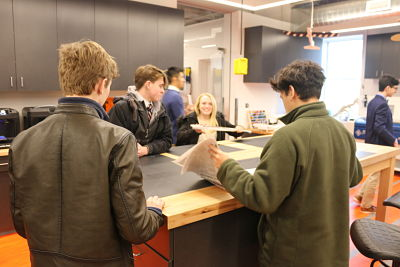
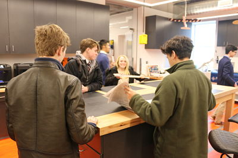
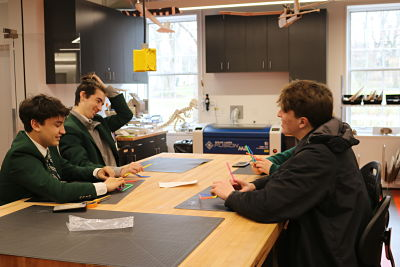
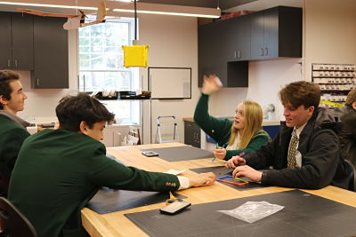

In the first challenge we were assigned to make a structure that would be able to stand against the wind being about 6 feet away. This structure was to be purley made out of news paper and tape.
Our project was succesful as our triangluar base was somewhat areodynamic with the point breaking against the wind. The base was my idea as I thought it could add stability and and b it of height to our project. Jen came up with rolled paper idea which helped us have the highest structure in our class. This idea of working together and listening to one another was what resulted in our group winning this challenge.
 

In the second challenge we were tasted to build something that would catch a falling golf ball. There could only be three straws touching the floor so we tried cutting straws to have the same amount of straws touching the floor with more points of structure. Unfourtanetly we all communicated poorly and did not create a succesful structure.
  Back To Home Page
Back To Home Page